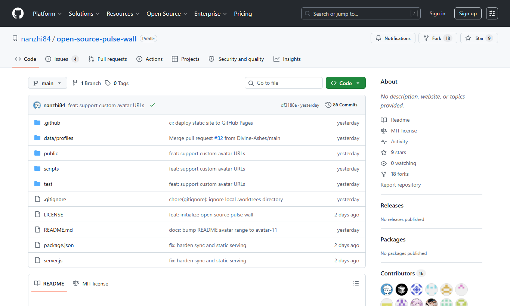

建议视频：用一张流程图解释 Fork、Branch、Commit、Pull Request 的流向，不进入具体操作。视频最后停在仓库首页，让学生能指出每个入口在哪里。
1. GitHub 协作地图
这一章先不要求学生写代码。真正要解决的是“我在 GitHub 上到底改的是谁的东西”。只要这个问题没讲清楚，后面的 Fork、分支、提交和 PR 都会变成一串没有意义的按钮。
一次贡献的完整路线
课堂项目有一个老师维护的主仓库。学生不能直接把自己的 Profile 写进老师仓库的 `main`，而是先 Fork 一份到自己的账号，随后在自己的副本里修改，再通过 Pull Request 把修改交回来。这个流程的好处是：老师仓库保持稳定，学生可以安全练习，所有修改都能被检查、讨论和回退。
- 老师仓库保存正式版本，展示墙从这里读取数据。
- 学生 Fork 仓库，得到自己账号下的一份副本。
- 学生在自己的副本里新建分支，只处理本次任务。
- 学生提交 commit，把这次修改保存成 Git 历史。
- 学生发 Pull Request，请老师把修改合并回主仓库。
核心对象
Repository
项目仓库。这个项目的页面、脚本、测试、Profile JSON 和截图资源都放在仓库里。
Issue
讨论入口。问题、想法、教学建议和 bug 都可以先放进 Issue，再决定是否改代码。
Fork
把老师仓库复制到自己的账号下。Fork 不是下载到电脑，而是在 GitHub 上创建一份属于你的远程副本。
Branch
一条独立修改线。每个任务开一个分支，避免把多个任务混在同一次 PR 里。
Commit
一次保存下来的变更快照。commit 信息应该能让别人看懂这次修改的目的。
Pull Request
一次合并请求。它不是普通评论，而是把你的分支和老师仓库的 `main` 放在一起比较。
课堂讲法
可以把老师仓库看成教室黑板，把 Fork 看成学生自己的练习本。学生先在练习本里写答案，写完后把答案交给老师检查。Branch 是练习本里的某一页，Commit 是这一页保存下来的一个版本，Pull Request 是交作业的动作。
这个比喻的关键是边界：老师仓库代表公共版本，学生 Fork 代表个人空间，Pull Request 代表把个人修改拿到公共空间讨论。学生只要理解这条边界，就会自然明白为什么不能直接改 `main`，也会明白为什么 PR 需要 review。

完成标准
- 能解释 Fork 和 clone 的区别：Fork 在 GitHub 上复制仓库，clone 把仓库下载到本地。
- 能解释 Branch 和 Pull Request 的关系：分支保存修改，PR 请求把分支合并回主仓库。
- 知道为什么每个任务应该单独开分支，而不是把所有修改都放进 `main`。
- 能在仓库首页找到 Issues、Pull requests、Fork 和 Code 按钮。